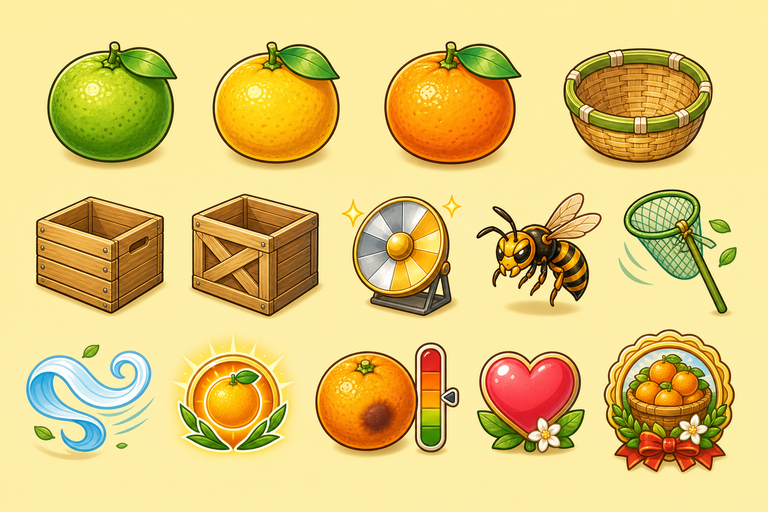

First Sunny Basket
Mikan Sunwheel Orchard
Harvest golden mikan, catch clean drops, and sort crates before bruises spread.Basket orbit 0° · Low canopy · Golden fruit ready
Press Start: audio unlocks after your gesture.